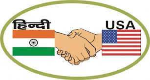

Activities
Coding Club

The Coding Club was the very first club I joined at UCVTS. In my sophomore year, I became an officer, and the following year, co-president. As a member of Coding Club, I’ve created and taught workshops on various programming languages and created and graded weekly coding challenges for members to participate and earn points towards a prize in. As president, I’ve reorganized the club’s structure, introduced workshops and challenges as a large part of the club’s activities, and overall created a larger presence for the club on campus.
Robotics
My freshman year, I was originally part of my hometown robotics team. I learned a lot about building robots, but I wanted to learn more about programming them and have more opportunity to participate, so the following year, I joined my campus team. As a member of the programming subteam, I’ve helped program our team robot, teach Java to new members, and build upon our team website.

National Honor Society
I was inducted into our chapter of NHS in January of 2019. At the end of my junior year, I was elected vice president. As vice president, I am responsible for our AIT Peer Tutoring program, which at the time was very small and most students were unaware of its existence. I reorganized the program and advertised it to our school, found tutors outside of NHS to tutor rarer/more difficult subjects, and tutored myself.
hindiUSA
Since sophomore year, I've been volunteering at the Edison chapter of HindiUSA, an organization which teaches Indian American kids the Hindi language and culture. I volunteer every Friday as a teaching assistant, which involves taking care of the daily basics such as taking attendance and grading homework, as well as participating in the lessons and providing English support for my teachers.
Westfield Memorial Library
I volunteer at my local library where I help organize and run various library programs. For example, one such program was a weekly six-day-long Girls Who Code event during which I helped teach the basics of programming through drop-and-drag code and taught a session of my own using JavaScript.